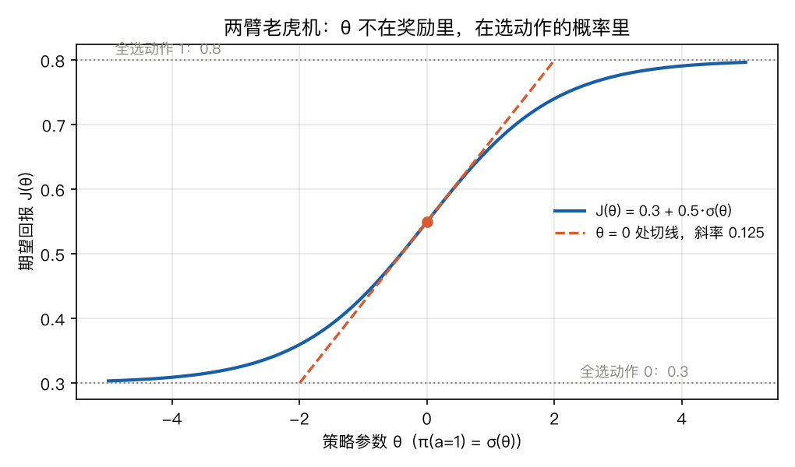
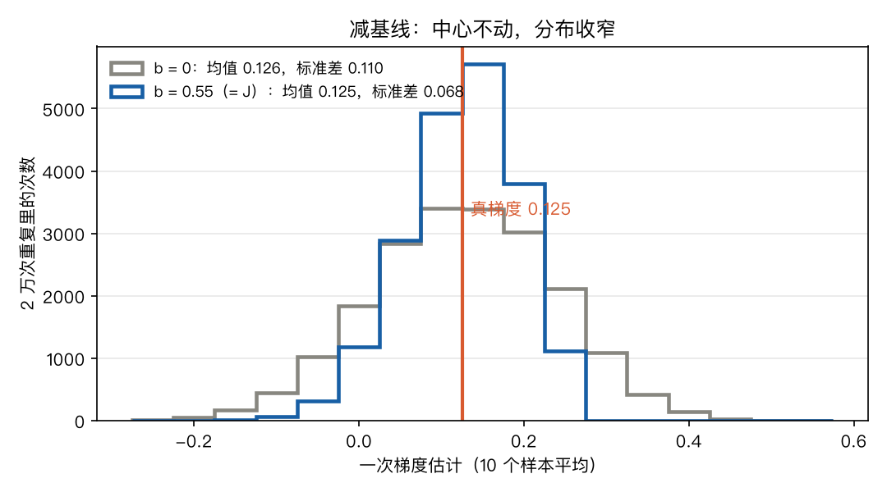
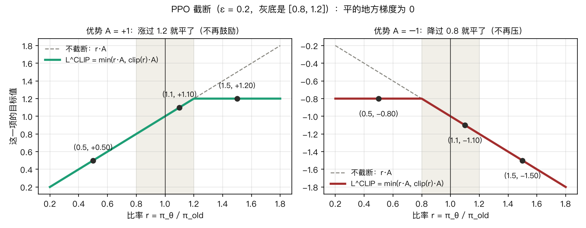
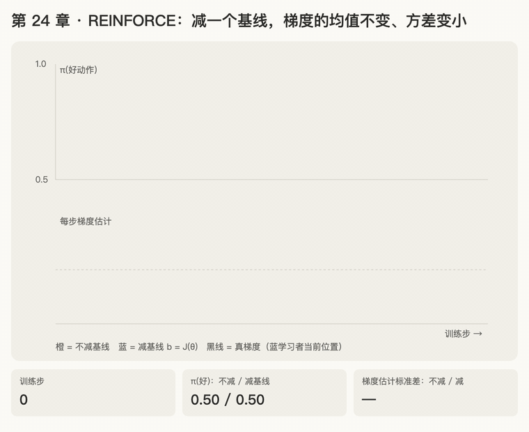

第 24 章 · 策略梯度推导：从似然比技巧到 PPO 和 GRPO
本地运行
git clone https://github.com/wikieden/math-and-eval-stats
cd math-and-eval-stats/code/notebooks
pip install jupyterlab torch numpy
jupyter lab ch24_policy_gradient.ipynb也可以下载后直接用 VS Code 打开 .ipynb 运行。需要 GPU 的章节在 Colab 里选「代码执行程序 → 更改运行时类型 → GPU」。
本章回答：奖励不可导、环境不可导，怎么对"期望回报"求梯度？为什么环境动力学在梯度里消失了？减一个基线为什么不改变梯度的期望、却能减小方差？PPO 的截断和 GRPO 的组内归一化在数学上做了什么？
讲解日期：2026-11-23 · 上一章：第 23 章 MDP 与 Bellman 的完整推导 · 下一章：第 25 章 LQR 与 Riccati
对应原文：Sutton & Barto 2nd ed. §13.2 策略梯度定理、§13.3 REINFORCE、§13.4 带基线的 REINFORCE（复用，cs285-deep-rl/materials/text/books/sutton-barto-RLbook2020.txtL25176、L25428、L25575）；Schulman 等 PPO 论文式 (7) \(L^{CLIP}\)（cs285-deep-rl/materials/text/papers/ppo-1707.06347.txtL142–L151）；DeepSeekMath 的 GRPO 优势 \(\hat A_{i,t} = (r_i - \mathrm{mean}(\mathbf{r}))/\mathrm{std}(\mathbf{r})\)（cs285-deep-rl/materials/text/papers/deepseekmath-grpo-2402.03300.txtL1049–L1050）
本章缩写：PG = Policy Gradient（策略 / 梯度）；REINFORCE = REward Increment = Nonnegative Factor × Offset Reinforcement × Characteristic Eligibility（Williams 1992 起的名字，就是"蒙特卡洛策略梯度"）；PPO = Proximal Policy Optimization（近端 / 策略 / 优化）；GRPO = Group Relative Policy Optimization（组内 / 相对 / 策略优化）；GAE = Generalized Advantage Estimation（广义 / 优势 / 估计）；τ 读作"tau"，一条轨迹。全部缩写见 附录 · 缩写与术语表
讲解
第一步：目标是一个期望，参数在概率里（2026-11-23）
类比：调整投篮姿势。 你不知道"命中率对手腕角度的导数"的公式，球场（环境）也不会告诉你。你只能投很多次，看哪种姿势进得多，再往那个方向调。
策略 \(\pi_\theta(a\mid s)\) 决定动作的概率。目标是期望回报：
- \(\tau = (s_0, a_0, s_1, a_1, \dots)\)：一条轨迹；\(p_\theta(\tau)\)：按当前策略跑出这条轨迹的概率。
- θ 不在 R 里，在 p 里。R 可以是不可导的 0/1 成功信号。
例子（玩具老虎机）：两个动作，动作 0 成功率 0.3，动作 1 成功率 0.8；策略 \(\pi(a{=}1) = \sigma(\theta)\)（sigmoid）。θ = 0 时各 0.5：
这里能直接求导是因为我们知道 0.3 和 0.8。真实问题里不知道，只能采样。

图 24-1 · J(θ) 在 0.3（总选动作 0）和 0.8（总选动作 1）之间变化。θ = 0 处切线斜率就是例子里的 0.125。真实问题里看不到这条曲线，只能靠采样估计斜率。
一句话：策略梯度要对"概率分布里的参数"求期望的梯度，回报本身可以不可导。
第二步：似然比技巧：把梯度搬进期望里（2026-11-23）
关键恒等式：\(\nabla_\theta p_\theta = p_\theta\,\nabla_\theta\log p_\theta\)（因为 \(\nabla\log p = \nabla p / p\)）。于是
- \(\nabla_\theta\log\pi\)：叫 score function（打分函数），"往哪调参数能让这个动作更可能"。
- 右边是期望，可以用采样估计：跑 N 条轨迹，平均 \(R\cdot\nabla\log p\)。
例子：θ = 0 时，\(\nabla\log\pi(a{=}1) = 1-\sigma = +0.5\)，\(\nabla\log\pi(a{=}0) = -\sigma = -0.5\)。精确期望：
和第一步直接求导一样。
一句话：\(\nabla\mathbb{E}[R] = \mathbb{E}[R\,\nabla\log p]\)；梯度变成了可以采样估计的期望。
第三步：环境动力学消失了：REINFORCE（2026-11-23）
轨迹概率是策略和环境的乘积：
取对数变求和，只有 π 那一项含 θ，初始分布和环境转移对 θ 的梯度是 0：
所以
- \(G_t\)：从 t 往后的回报（"因果性"：t 时刻的动作只影响之后的奖励，所以只乘之后的回报，进一步减方差）。
- 这就是 REINFORCE（Sutton & Barto §13.3，L25428 起）。不需要知道环境模型，也不需要环境可导。
和第 8 章对照：行为克隆是 \(\sum\nabla\log\pi(a_{\text{专家}})\)，每条权重都是 1；策略梯度是 \(\sum\nabla\log\pi(a_{\text{自己}})\cdot G\)，按回报加权。策略梯度 = 按回报加权的最大似然。
一句话：对数把乘积拆开，环境项对 θ 的导数为 0；REINFORCE = 按回报加权的 log 概率梯度。
第四步：基线：不改期望，只减方差（2026-11-23）
类比：给员工发奖金。 如果每个人都"+100 分"，你分不出谁干得好；减去平均分以后，高于平均的加、低于平均的减，信号清楚得多。
任意不依赖动作的 \(b\)：
所以把 \(G\) 换成 \(G - b\)，梯度的期望不变（Sutton & Barto §13.4，L25575）。b 取得好（接近期望回报，即值函数 \(V(s)\)），方差显著下降；\(G - V(s)\) 就是优势 \(A\)。
例子（每次用 10 个样本估梯度，重复 2 万次）：
| 基线 b | 梯度估计的均值 | 标准差 |
|---|---|---|
| 0 | 0.126 | 0.110 |
| 0.55（= J） | 0.125 | 0.068 |
均值都在真值 0.125 附近，标准差降了约 40%。
补基础：《从零学强化学习》第 20 章 策略梯度、第 21 章 基线、第 22 章 Actor-Critic 与 GAE 讲了算法和代码。

图 24-2 · 每次用 10 个样本估一次梯度，重复 2 万次。两种估计的中心都在真值 0.125（橙线），减基线后分布明显收窄，和上表的标准差一致。
一句话：\(\mathbb{E}[b\nabla\log\pi] = 0\)，所以减基线不偏；减掉期望回报得到优势，方差小很多。
第五步：PPO 截断与 GRPO 组内归一化（2026-11-23）
问题：一批数据用完就扔太浪费，想多更新几步；但策略变多了，旧数据就不再是"当前策略采的"。用重要性采样比率修正（第 16 章）：
（PPO 论文式 7，L142）
- 优势为正：比率涨过 1 + ε 后不再奖励，防止一步把好动作推得太猛。
- 优势为负：比率降过 1 − ε 后不再惩罚；但比率变大（坏动作变得更可能）时照罚不误。取 min 是"只截对自己有利的那一侧"（L151）。
例子（ε = 0.2）：
| 比率 r | 优势 A | \(\min(rA, \mathrm{clip}(r)A)\) | 说明 |
|---|---|---|---|
| 1.1 | +1 | +1.10 | 在区间内，正常 |
| 1.5 | +1 | +1.20 | 截在 1.2，不再鼓励 |
| 0.5 | +1 | +0.50 | 好动作变少了，照常推回 |
| 0.5 | −1 | −0.80 | 截在 0.8，不再继续压 |
| 1.5 | −1 | −1.50 | 坏动作变多了，照罚 |
GRPO：不训练价值网络，对同一个问题采一组 G 条回答，用组内的均值和标准差当基线（DeepSeekMath，L1049–L1050）：
例子：一组 4 条回答奖励 [1, 0, 0, 1]：优势 [+1, −1, −1, +1]。全对或全错的组 std = 0，优势全为 0，这一组不贡献梯度。在 VLA 上用 GRPO 的问题见 《机器人运控与强化学习》第 6 章。
场景代码：PPO 的损失在实现里就几行：
import torch
logp = dist.log_prob(actions).sum(-1) # 当前策略的 log π(a|s)（第 9 章高斯头）
ratio = torch.exp(logp - logp_old) # r_t = π_θ / π_old，用 log 相减再 exp，数值稳定
adv = (adv - adv.mean()) / (adv.std() + 1e-8) # 优势归一化：批内版本的"减基线、除标准差"
surr1 = ratio * adv
surr2 = torch.clamp(ratio, 1 - 0.2, 1 + 0.2) * adv # 第五步的 clip
policy_loss = -torch.min(surr1, surr2).mean() # 最大化 L^CLIP = 最小化它的负数

图 24-3 · 灰底是 [1 − ε, 1 + ε]。优势为正时曲线在 1.2 之后变平，优势为负时在 0.8 之前变平；平的地方梯度为 0。黑点是上表的例子。
一句话：PPO 用比率修正旧数据、只截对自己有利的一侧；GRPO 用一组回答的均值和标准差当基线。
动画演示：两臂老虎机上，有基线和没基线的 REINFORCE

可交互版：animations/24-reinforce-baseline.html（滑块：学习率、每步样本数、两个动作的成功率）
怎么看： 1. 上图：两条曲线是 π(选好动作) 随训练步数的变化，橙色不减基线、蓝色减基线（第三、四步）。同一组随机数，两条线面对一样的运气。 2. 下图：每一步的梯度估计散点，横线是真梯度（第一步）。橙点散得更开，蓝点更集中：均值一样，方差不同。 3. 两个动作成功率拖得很接近时，信号变弱，两条线都学得慢，橙色抖得更厉害。 4. 学习率拖大，橙色常常冲过头又被拉回；这正是 PPO 要限制每步变化的原因（第五步）。
练习与作答记录
题 1（第二步）：策略 π(a=1) = σ(θ)。在 θ = ln 3（此时 σ = 0.75）处，算 ∇log π(a=1) 和 ∇log π(a=0)，并验证 \(\mathbb{E}_{a\sim\pi}[\nabla\log\pi(a)] = 0\)。
作答：（待作答）
题 2（第三、四步）：为什么说"策略梯度 = 按回报加权的行为克隆"？如果所有回合回报都是 +10（没有基线），训练会发生什么？
作答：（待作答）
题 3（第五步）：ε = 0.2。（a）比率 0.7、优势 +2 时，\(L^{CLIP}\) 这一项是多少，梯度会不会继续推动比率？（b）GRPO 一组 4 条奖励 [1, 1, 1, 0]，各自的优势是多少？
作答：（待作答）
口诀
参数藏在概率里，似然比把梯度搬；
对数一拆环境掉，回报加权克隆样；
基线期望恒为零，减掉平均方差降；
PPO 只截得利侧，GRPO 组内比短长。
本章复习卡片
ST27–ST30（必须记住的公式和概念）。练习做完后，按答错、卡住的地方补上。
附录 · 延伸阅读
留给以后深入学习用，不影响本章主线。★ 是建议先读的。
推荐阅读
| 读什么 | 读哪里 | 读它为了什么 |
|---|---|---|
| ★ Sutton & Barto 第 13 章 | §13.2 L25176、§13.3 L25428、§13.4 L25575 | 策略梯度定理的完整证明、REINFORCE 与基线 |
| ★ PPO 论文 | §3 L142–L160 | 截断目标的设计理由 |
| DeepSeekMath | GRPO 段 L1040–L1060 | 组内优势、KL 项 |
| GAE 论文 | §3 | 用 λ 在偏差和方差之间折中的优势估计 |
| 《从零学强化学习》第 20–23 章 | 全部 | 同一套推导的算法与代码版 |
| 《机器人运控与强化学习》第 3、6 章 | 全部 | 运控里的 PPO 配方、GRPO 的信用分配问题 |
数学原理
- 对数导数恒等式：\(\nabla p = p\nabla\log p\)；第 16 章重要性采样、第 27 章 score function 都用它。
- score 的期望为 0：\(\mathbb{E}_{p_\theta}[\nabla\log p_\theta] = \nabla\sum p_\theta = 0\)；基线不偏就是这条的推论。
- 方差最优基线：使方差最小的常数基线是 \(b^* = \mathbb{E}[G\,\|\nabla\log\pi\|^2]/\mathbb{E}[\|\nabla\log\pi\|^2]\)，实践中用 \(V(s)\) 近似。
- 信任域：PPO 的截断是 TRPO 的 KL 约束 \(\mathbb{E}[\mathrm{KL}(\pi_{old}\|\pi_\theta)] \le \delta\) 的一阶简化（第 34 章信息几何）。
公式清单
| 公式 | 意思 |
|---|---|
| \(\nabla_\theta J = \mathbb{E}[R(\tau)\nabla_\theta\log p_\theta(\tau)]\) | 似然比 / score function 梯度 |
| \(\nabla\log p_\theta(\tau) = \sum_t\nabla\log\pi_\theta(a_t\mid s_t)\) | 环境项消失 |
| \(\mathbb{E}_{a\sim\pi}[b\nabla\log\pi(a)] = 0\) | 基线不偏 |
| \(A = G - V(s)\) | 优势 |
| \(r_t = \pi_\theta/\pi_{old}\)；\(L^{CLIP} = \mathbb{E}[\min(r_tA_t, \mathrm{clip}(r_t,1\pm\epsilon)A_t)]\) | PPO |
| \(\hat A_i = (r_i - \mathrm{mean})/\mathrm{std}\) | GRPO 组内优势 |
代码对照：把本章的数字用代码算一遍
Python + NumPy。代码在仓库本地
math-and-eval-stats/solutions/chapter-code/ch24_policy_gradient.py，配套测试tests/test_ch24.py：
bash cd math-and-eval-stats/solutions/chapter-code uv run python ch24_policy_gradient.py uv run pytest tests/test_ch24.py
讲义 ↔ 代码：
| 讲义 | 公式 | 写法 | 跑出来 |
|---|---|---|---|
| 第一步 | \(J\)、\(dJ/d\theta\) | objective(0)、true_gradient(0) |
0.55、0.125 |
| 第二步 | score | score(0, 1)、score(0, 0) |
+0.5、−0.5 |
| 第三、四步 | REINFORCE ± 基线 | reinforce_samples(0, n, baseline=b) |
均值 0.126 / 0.125，标准差 0.110 / 0.068 |
| 第五步 | PPO clip | ppo_clip_term(r, A) |
+1.10、+1.20、+0.50、−0.80、−1.50 |
| 第五步 | GRPO 优势 | grpo_advantages([1,0,0,1]) |
[+1, −1, −1, +1] |
关键几行：
s = np.where(a == 1, 1 - p1, -p1) # ∇θ log π(a)：sigmoid 策略的 score
grad_samples = (r - baseline) * s # REINFORCE：(回报 − 基线) × score
clipped = max(min(ratio, 1 + eps), 1 - eps) # clip(r, 1-ε, 1+ε)
term = min(ratio * adv, clipped * adv) # 取 min：只截对自己有利的一侧
adv = (r - r.mean()) / (r.std() + 1e-8) # GRPO：组内归一化
代码里才看得到的 3 件事：
- 动作和奖励用同一个随机种子生成，所以有基线 / 没基线比较时面对的是"同一组运气"，方差差别只来自基线本身。
r.std()是总体标准差（除以 G），有的实现用样本标准差（除以 G − 1），G 小时数值不同；全对全错时加 1e-8 防止除零。- 实现里的损失是 \(-L^{CLIP}\)（要最小化），正负号写反了训练会把好动作越推越少，这是最常见的 PPO bug 之一。
自己改一改（不影响练习答案）：
- 把基线改成 0.3（不等于 J），看均值是否仍是 0.125、标准差在 0.068 和 0.110 之间的哪里。
- 把两个动作的成功率改成 0.5 和 0.55，看梯度估计的"信噪比"（均值 ÷ 标准差）下降多少。
- 对照 notebook，用 REINFORCE 真的训练 200 步，画 π(a=1) 的曲线。